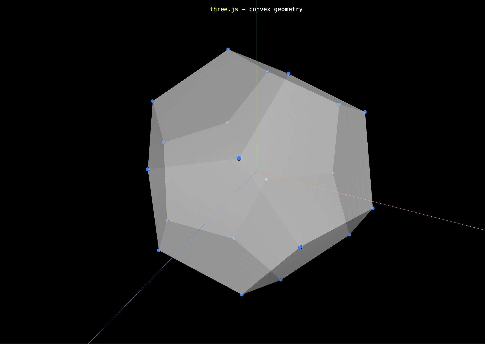

此為 Three.js 中物體的遠近關係 系列文章 - 第 2 篇：
- Three.js 中物體的遠近關係 (1) - 什麼是深度測試？
- Three.js 中物體的遠近關係 (2) - 左手/右手座標系與齊次座標
- Three.js 中物體的遠近關係 (3) - 深度值的計算方式
- Three.js 中物體的遠近關係 (4) - 對數深度值
- Three.js 中物體的遠近關係 (5) - 渲染物體的順序
- Three.js 中物體的遠近關係 (6) - 如何正確的渲染透明粒子？
前言
上一篇系列文中，我們了解深度測試中不同 像素(fragment) 是如何藉由比較各自的深度值來決定誰會渲染在畫面上，接著我們將討論深度值在數學上是如何計算出來的，但在那之前需要一些必備的知識幫助我們理解後續的數學推導，所以第二篇的系列文我們來學習這部分 - 左手/右手座標系、齊次座標
左手/右手座標系
3D 圖學中的左手/右手座標系統代表了 $ x, y, z $ 軸指向的定義
- 左手座標系
- 伸出左手使正 y 軸沿著手往上
- 使大拇指向右邊
- 讓食指指向上方
- 向下 90 度彎曲中指
=> 此時大拇指指向正 x 軸方向、食指朝向正 y 軸方向、中指朝向正 z 軸方向，如下左圖所示
- 右手座標系
- 伸出右手使正 y 軸沿著手往上
- 使大拇指向右邊
- 讓食指指向上方
- 向下 90 度彎曲中指
=> 此時大拇指指向正 x 軸方向、食指朝向正 y 軸方向、中指朝向正 z 軸方向，如下右圖所示
左/右手座標系可以幫助我們之後在不同座標系統進行正確的數值轉換，事實上左/手座標軸的數學轉換很簡單就只是將 +z 的座標數值變成 -z

由於 Three.js 的底層 OpenGL 採用的是右手座標系，所以使用 AxesHelper 時，可以看到 +z 軸(藍色的線)指向面對我們的方向 (藍色的線可能太細，放大圖片比較好看到)
齊次座標 (Homogeneous coordinates)
一開始聽到 齊次座標 這個專有名詞時，真的不懂他是個什麼樣的東西，後來經過一陣子的研究後，我發現 齊次座標 一言以蔽之就是 一種用 N + 1 個位數表示 N 維座標的技巧，如何理解 齊次座標 代表的意義呢？我覺得從實際應用的場景來看就可以體會到他厲害的地方，齊次座標 在 3D 圖學中主要應用於兩點，第一點是 矩陣變換 (Matrix transformations) ，第二點是 透視變換 (Perspective transformation)
1. 矩陣變換 (Matrix transformations)
假設在 3D 空間中有個點 $ P $ 其座標以 $ (x, y, z) $ 表示，我們希望對這個點進行座標轉換，像是平移、縮放、旋轉等，雖然 $ P $ 點是一個三維的座標，但數學家發現如果將這個三維座標以四維表示，而平移、縮放、旋轉這些行為也用一個 4x4 的矩陣來表示，座標轉換都可以用矩陣來表示，這裡我們將原本三維空間中的點 $ P $ 轉換成四維座標：
$$ P = \begin{bmatrix} x \\ y \\ z \end{bmatrix} \quad => \quad P = \begin{bmatrix} x \\ y \\ z \\ 1 \end{bmatrix} $$平移 (Translation)
假設我們想要將 $ P $ 點加上一個平移的向量 $ (\color{red}{T_x}, \color{green}{T_y}, \color{blue}{T_z} \textcolor{black}{)} $，新的向量 $ P' = (x + \color{red}{T_x} \color{black}{,} \;\; y + \color{green}{T_y} \color{black}{,} \;\; z + \color{blue}{T_z} \textcolor{black}{)} $ ，我們可以用一個簡單的 4x4 平移矩陣乘以四維的 $ P $ 點求得平移後的座標
$$ \begin{bmatrix} \color{red}{1} & \color{red}{0} & \color{red}{0} & \color{red}{T_x} \\ \color{green}{0} & \color{green}{1} & \color{green}{0} & \color{green}{T_y} \\ \color{blue}{0} & \color{blue}{0} & \color{blue}{1} & \color{blue}{T_z} \\ \color{purple}{0} & \color{purple}{0} & \color{purple}{0} & \color{purple}{1} \end{bmatrix} \cdot \begin{bmatrix} x \\ y \\ z \\ 1 \end{bmatrix} = \begin{bmatrix} x+\color{red}{T_x} \\ y+\color{green}{T_y} \\ z+\color{blue}{T_z} \\ 1 \end{bmatrix} $$縮放 (Scaling)
接著我們打算將 $ P $ 點進行縮放 $ (\color{red}{S_x}, \color{green}{S_y}, \color{blue}{S_z} \textcolor{black}{)} $，新的向量 $ P' = (\color{red}{S_x} \color{black} \cdot {x,} \;\; \color{green}{S_y} \color{black} \cdot {y,} \;\; \color{blue}{S_z} \color{black} \cdot {z}\textcolor{black}{)} $ ，一樣我們可以套用以下縮放矩陣求得 $ P $ 點縮放後的座標
$$ \begin{bmatrix} \color{red}{S_x} & \color{red}{0} & \color{red}{0} & \color{red}{0} \\ \color{green}{0} & \color{green}{S_y} & \color{green}{0} & \color{green}{0} \\ \color{blue}{0} & \color{blue}{0} & \color{blue}{S_z} & \color{blue}{0} \\ \color{purple}{0} & \color{purple}{0} & \color{purple}{0} & \color{purple}{1} \end{bmatrix} \cdot \begin{bmatrix} x \\ y \\ z \\ 1 \end{bmatrix} = \begin{bmatrix} \color{red}{S_x} \color{black} \cdot x \\ \color{green}{S_y} \color{black} \cdot y \\ \color{blue}{S_z} \color{black} \cdot z \\ 1 \end{bmatrix} $$旋轉 (Rotation)
最後我們來探討是旋轉矩陣，旋轉矩陣不像平移及縮放矩陣一樣可以直覺的了解，中間牽涉一些座標軸轉換的數學推導，這裡我們跳過複雜的推導過程，只留下最後的結果
沿 y 軸旋轉的旋轉矩陣長這樣：
$$ \begin{bmatrix} \color{red}{\cos\theta} & \color{red}{0} & \color{red}{\sin\theta} & \color{red}{0} \\ \color{green}{0} & \color{green}{1} & \color{green}{0} & \color{green}{0} \\ \color{blue}{-\sin\theta} & \color{blue}{0} & \color{blue}{\cos\theta} & \color{blue}{0} \\ \color{purple}{0} & \color{purple}{0} & \color{purple}{0} & \color{purple}{1} \end{bmatrix} \cdot \begin{bmatrix} x \\ y \\ z \\ 1 \end{bmatrix} = \begin{bmatrix} \color{red}{\cos\theta} \color{black} \cdot x + \color{red}{\sin\theta} \color{black} \cdot z \\ y \\ \color{blue}{-\sin\theta} \color{black} \cdot x + \color{blue}{\cos\theta} \color{black} \cdot z \\ 1 \end{bmatrix} $$矩陣的組合
最後我們嘗試混合平移、縮放及旋轉矩陣，希望將原本的點 $ P (1, 1, 1) $ 座標
- 沿著 y 軸旋轉 $ 180^\circ (\pi) $
- 將長度放大為兩倍
- 平移座標 $ (1, 0, 0) $
- 點 $ P (1, 1, 1) $，沿著 y 軸旋轉 $ 180^\circ => P’ (-1, 1, 1) $
- 點 $ P (-1, 1, 1) $，將長度放大為兩倍 $ => P’ (-2, 2, 2) $
- 點 $ P (-2, 2, 2) $，平移座標 $ (1, 0, 0) => P’ (-1, 2, 2) $
最後我們可以理解 齊次座標 在 矩陣變換 中的重要性了，單純只是將三維座標 $ (x, y, z) $ 添加一個額外的維度變成四維座標 $ (x, y, z, 1) $ 後，平移、縮放、旋轉這些複雜的座標轉換都可以輕鬆的用矩陣乘法來解決
2. 透視變換 (Perspective transformation)
透視 (perspective) 指的是物體離相機越遠會變得越小的狀況，這跟人眼看到的狀況相符，Three.js 中用 PerspectiveCamera 來代表這種行為，下圖我們可以看到鐵軌兩側的軌道是平行的，但當軌道延伸到無限遠處時，人眼看起來就會匯聚於一點

如何讓兩條平行線相交
從小就有學過一般的 歐幾里得空間(Euclidean space) 可以用以下方程式表示兩條平行線：
$ \left\{ \begin{array}{l} Ax + By + C = 0 \\ Ax + By + D = 0 \end{array} \right. $由於是兩條不同的平行線，$ C $ 與 $ D $ 的值不同，這種情況下不論 $ x, y $ 的值是多少都無法使等式成立，也代表兩條平行線是不會有交點的
但以下我們套用 齊次座標 的概念來重寫以上兩條等式，將原本的 $ x, y $ 分別替換成 $ \displaystyle \frac{x}{w}, \frac{y}{w} $
$ \left\{ \begin{array}{l} \displaystyle \frac{A x}{w} + \frac{B y}{w} + C = 0 \\ \displaystyle \frac{A x}{w} + \frac{B y}{w} + D = 0 \end{array} \right. \quad \Rightarrow \quad \left\{ \begin{array}{l} Ax + By + Cw = 0 \\ Ax + By + Dw = 0 \end{array} \right. \quad \Rightarrow \quad Cw - Dw = 0 \quad \Rightarrow \quad (C-D)w = 0 $此時我們獲得一個解當 $ w = 0 $ 可以使等式成立，也就是轉換過後的 $ \displaystyle x’ = \frac{x}{w} = \frac{x}{0} = \infty $
這意味著兩條平行線會在 $ (x, y, 0) $ 處相交，而這相交點處位在無窮遠的地方
齊次座標的 w 分量
我們可以將一個二維的座標 $ (x, y) $ 表示成 齊次座標 $ (x, y, w) $，反過來也可以將 齊次座標 $ (x, y, w) $ 轉換回二維的座標 $ \displaystyle (\frac{x}{w}, \frac{y}{w}) $
當 $ w = 0 $ 的時候，轉換回二維座標 $ x, y $ 會變成無窮大，此時 $ (x, y) $ 座標代表的不是點，而是一條延伸到無窮遠處的向量，這就是上面 透視變換 提到鐵軌兩側的平行線
當 $ w > 0 $ 的時候，是上面 矩陣變換 的狀況，齊次座標 $ (1, 1, 1, 1) $ 轉換為三維座標為 $ (1, 1, 1) $ 代表的是三維空間中的點，由於轉換回三維座標是除以 $ w $ 分量，所以其實以下的 齊次座標 代表的都對應到三維空間中的同一個點 $ (1, 1, 1) $
$ \begin{array}{l} (1, 1, 1, 1) \\ (2, 2, 2, 2) \\ (3, 3, 3, 3) \\ ... \\ ... \\ (n, n, n, n) \end{array} $這就是 齊次 (Homogeneous) 所代表的意義，n + 1 維空間中 齊次座標 中的許多點其實都對應到 n 維空間中的同一個點
參考資料
变换
Homogeneous Coordinates
Explaining Homogeneous Coordinates & Projective Geometry
一看就懂的OpenGL ES教程——走进3D的世界之坐标系统（下篇）